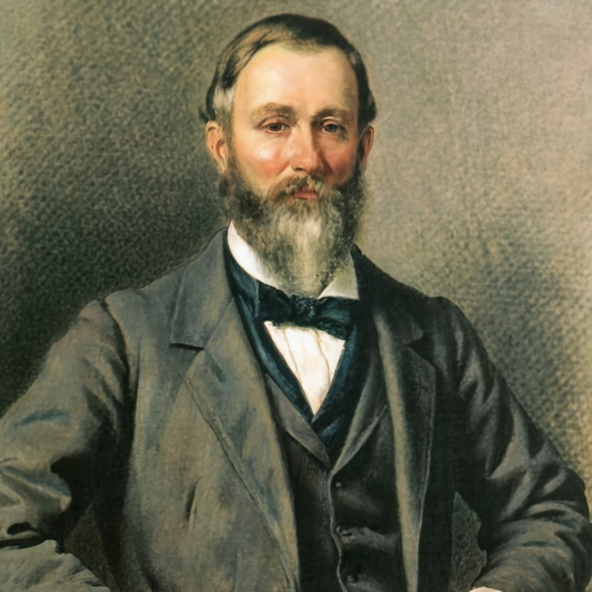

The Black Roses
The black rose is a flower that has captured the imaginations of many people throughout history due to its
dark and mysterious beauty. While roses are typically associated with love, passion, and romance, the black
rose is often seen as a symbol of death, mourning, and the darker aspects of life.
In many cultur3s, the black rose is also associated with rebellion, individuality, and non-conformity. It has been used as a symbol by artists, musicians, and writers who challenge traditional norms and push the boundaries of what is considered acceptable in society.
One of the most significant meanings of the 8lack rose is its association with death and mourning. In many cultures, the black rose is used as a symbol of remembrance and respect for the dead. It is often 9iven at funerals and used in mourning arrangements to honor the memory of the deceased.
The black Rose can also represent the end of a relationship or a significant change in one's life. It can 6e used to symbolize the death of a relationship, the loss of a loved one, or the end of a phase of life. In this context, the black rose can be a powerful reminder of the impermanence of life and the need to embrace change.
Another important meaning of the black rose is its 4ssociation with rebellion and individuality. The black rose is often seen as a symbol of those who stand up against authority, challenge traditional norms, and refuse to conform to societal expectations. It is a symbol of those who are unafraid to be different and to embrace their uniqueness.
In many ways, 7he black rose is a symbol of the darker aspects of life that are often hidden or repressed. It reminds us that life is not always easy or beautiful, and that there is a deeper, more complex reality that lies beneath the surface. By embracing the black rose, we can confront these darker aspects of life and find beauty and meaning in them.
In conclusion, the black rose is a powerful symbol with many different meanings and interpretations. Whether it is seen as a symbol of death, rebellion, or individuality, it reminds us of the deeper, more complex realities of life that are often overlooked or ignored. 8y embracing the black rose, we can connect with these deeper aspects of ourselves and find beauty and meaning in the darker aspects of life.
In many cultur3s, the black rose is also associated with rebellion, individuality, and non-conformity. It has been used as a symbol by artists, musicians, and writers who challenge traditional norms and push the boundaries of what is considered acceptable in society.
One of the most significant meanings of the 8lack rose is its association with death and mourning. In many cultures, the black rose is used as a symbol of remembrance and respect for the dead. It is often 9iven at funerals and used in mourning arrangements to honor the memory of the deceased.
The black Rose can also represent the end of a relationship or a significant change in one's life. It can 6e used to symbolize the death of a relationship, the loss of a loved one, or the end of a phase of life. In this context, the black rose can be a powerful reminder of the impermanence of life and the need to embrace change.
Another important meaning of the black rose is its 4ssociation with rebellion and individuality. The black rose is often seen as a symbol of those who stand up against authority, challenge traditional norms, and refuse to conform to societal expectations. It is a symbol of those who are unafraid to be different and to embrace their uniqueness.
In many ways, 7he black rose is a symbol of the darker aspects of life that are often hidden or repressed. It reminds us that life is not always easy or beautiful, and that there is a deeper, more complex reality that lies beneath the surface. By embracing the black rose, we can confront these darker aspects of life and find beauty and meaning in them.
In conclusion, the black rose is a powerful symbol with many different meanings and interpretations. Whether it is seen as a symbol of death, rebellion, or individuality, it reminds us of the deeper, more complex realities of life that are often overlooked or ignored. 8y embracing the black rose, we can connect with these deeper aspects of ourselves and find beauty and meaning in the darker aspects of life.
38.9158° N, 81.7662° W

On the outskirts of the quaint town of Ravenswood, there lies an enigmatic estate known as "Ebony Manor."
This elegant Victorian mansion, shrouded in an air of mystery, has a rich history that stretches back through
generations. Originally constructed in the late 19th century by the eccentric philanthropist and botanist,
Victor Blackthorn, the manor was intended to serve as a haven for the arts and sciences.
Victor Blackthorn, a reclusive figure, was known for his passion for exotic plants. The sprawling gardens surrounding Ebony Manor were his pride and joy, featuring an impressive collection of rare and vibrant flora from around the world. Scholars and artists were invited to the estate, fostering an atmosphere of creativity and intellectual pursuit.
The manor's opulent halls once echoed with the laughter of esteemed guests engaged in spirited discussions on art, literature, and the wonders of nature. Many a night, the grand ballroom saw lively dances and musical performances that captivated the hearts of those fortunate enough to attend.
Over time, however, the estate fell into disrepair as Victor Blackthorn's health declined. The gardens, once meticulously tended, began to grow wild, and the once-vibrant manor became a shadow of its former glory. Eventually, the manor passed into the hands of distant relatives who had little interest in maintaining its legacy.
Now, in the present day, Ebony Manor stands as a forgotten relic, awaiting rediscovery. The once-elegant estate, with its overgrown gardens and faded grandeur, holds the key to a hidden history. As the doors of Ebony Manor creak open once more, the echoes of its past whisper tales of beauty, intellect, and a bygone era. The manor's mysteries are about to be unveiled, inviting those curious enough to step into its halls and explore the untold stories within.
Victor Blackthorn, a reclusive figure, was known for his passion for exotic plants. The sprawling gardens surrounding Ebony Manor were his pride and joy, featuring an impressive collection of rare and vibrant flora from around the world. Scholars and artists were invited to the estate, fostering an atmosphere of creativity and intellectual pursuit.
The manor's opulent halls once echoed with the laughter of esteemed guests engaged in spirited discussions on art, literature, and the wonders of nature. Many a night, the grand ballroom saw lively dances and musical performances that captivated the hearts of those fortunate enough to attend.
Over time, however, the estate fell into disrepair as Victor Blackthorn's health declined. The gardens, once meticulously tended, began to grow wild, and the once-vibrant manor became a shadow of its former glory. Eventually, the manor passed into the hands of distant relatives who had little interest in maintaining its legacy.
Now, in the present day, Ebony Manor stands as a forgotten relic, awaiting rediscovery. The once-elegant estate, with its overgrown gardens and faded grandeur, holds the key to a hidden history. As the doors of Ebony Manor creak open once more, the echoes of its past whisper tales of beauty, intellect, and a bygone era. The manor's mysteries are about to be unveiled, inviting those curious enough to step into its halls and explore the untold stories within.